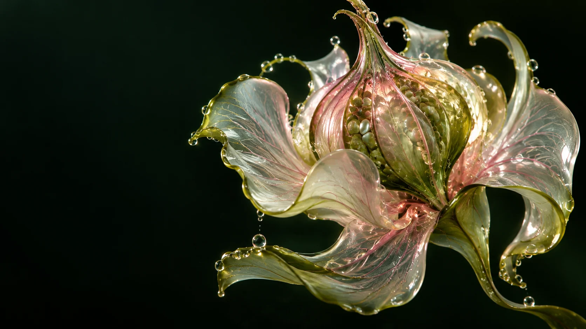
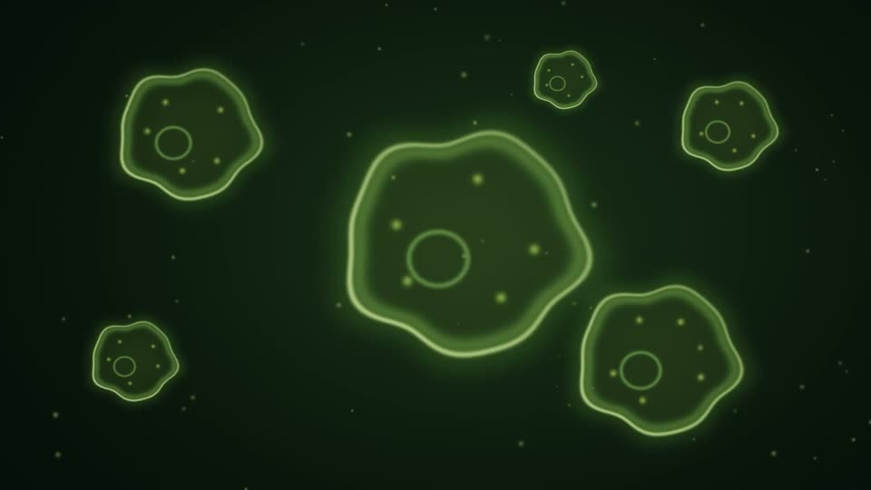

The world,
folded small.
Before it is a flower, it is a possibility. A whole impossible future, sleeping in the palm of a moment.
State: waitingCondition: a little attention

A garden that remembers you.
An organism that follows your lead.
Life begins with the smallest of gestures. A little light. A shift in attention. Your journey through this garden is the thing that makes it grow.
Before it is a flower, it is a possibility. A whole impossible future, sleeping in the palm of a moment.
State: waitingThere is no blueprint for becoming. Only the soft, stubborn decision to open toward something.
State: awakeningA little strange. A little unrepeatable. It bloomed because you stayed long enough to see it.
State: flourishingA glimpse beneath the surface.
A whole world, moving in whispers.

Not every kind of growth makes a sound.
Plant a small memory in this garden.
No two visits grow the same way.
A small keepsake from a garden
that existed, for a moment, with you.